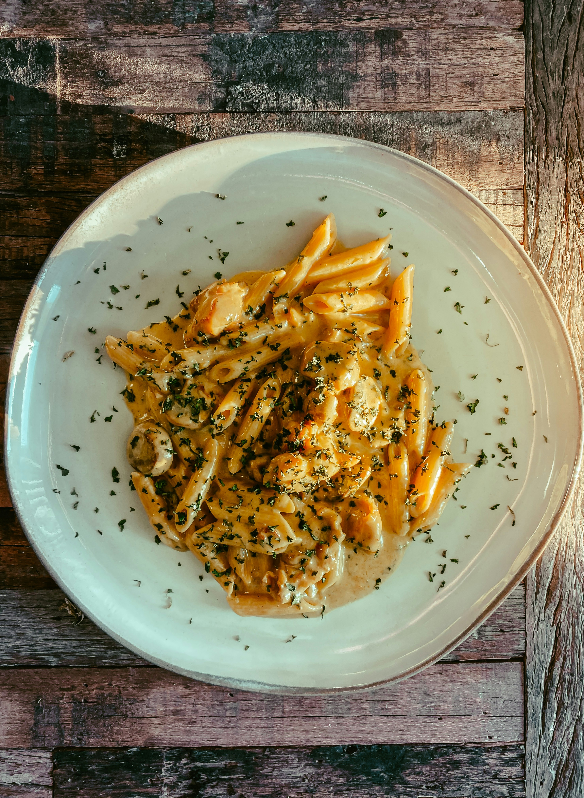

Home
Creamy Parmesan

Pasta & herb you can serve!
Creamy pasta coated with a rich, creamy, herby-sauce! Almost a soup-pasta hybrid, this dish leaves little to be desired with
it's abudance of flavor and spices!
Ingredients
- 3 cups pasta
- 1/2 tablespoon italian seasoning
- 1 teaspoon paprika
- 1/2 teaspoon salt
- 1/2 teaspoon garlic powder
- 1/4 teaspoon black pepper
- 1/4 teaspoon red pepper
- 1/3 cup whipping cream
- 3 cups chicken broth
- 1/4 cup whipping cream
- 1 tablespoon cream cheese
Steps
- Add pasta, seasonings, and chicken broth to pot
- Stir, then leave to cook for 8-10 minutes
- Stir again, add whipping cream and cream cheese and stir until fully mixed
- Add parmesan (and spinach, optional)
- Stir and serve!